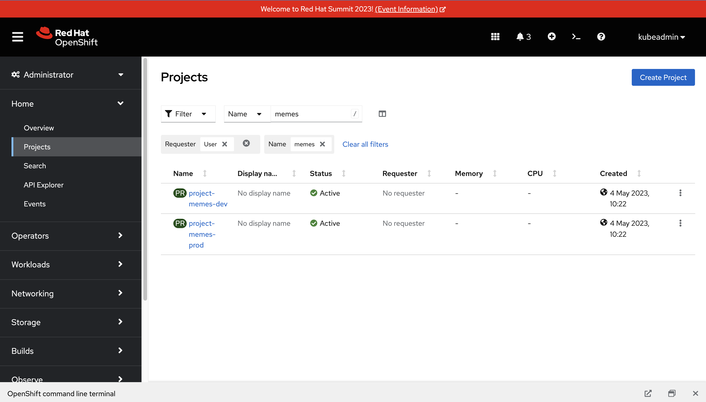
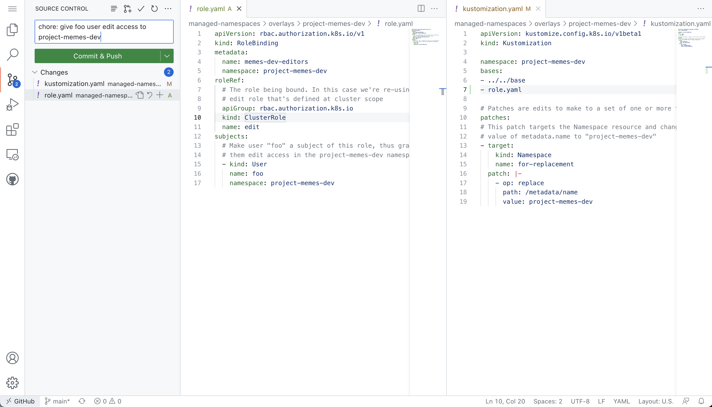
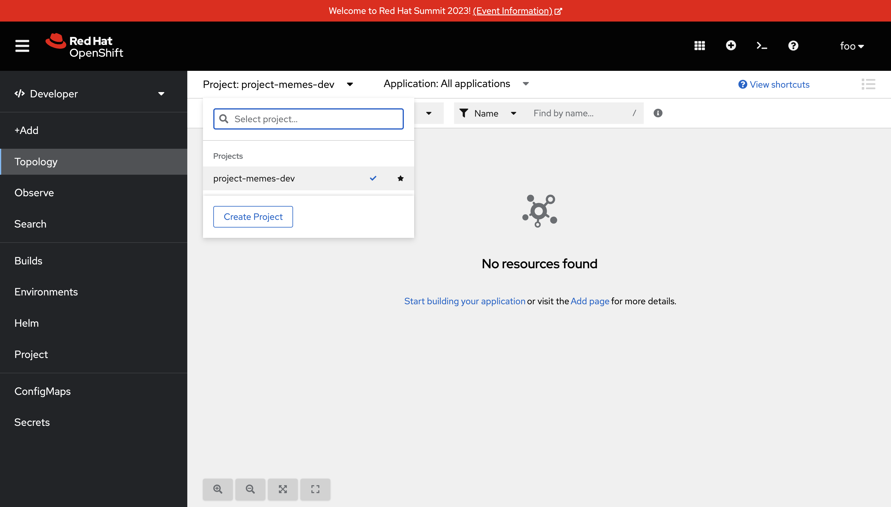

RBAC for Namespaces ⏱️ Estimated Time: 5 Minutes 👨💻 Role: Cluster Administrator Verify Namespace Access At this point, you’ve successfully created two Namespaces by synchronising resources using Argo CD. Verify that you can access them: Login to the OpenShift Web Console. Select the Administrator perspective. Scroll down and find the Home > Projects section using the side-menu. A Project in OpenShift is a Kubernetes Namespace with some extra annotations. For all intents and purposes, you can treat an OpenShift "Project" as analogous to a "Namespace" during this workshop. Find the project-memes-dev Namespace as shown.  Great! Now try doing the same thing again, but as a user without the cluster-admin role: Log out of the OpenShift Web Console by clicking your username in the top-right corner, and clicking the Log out link that appears. From the OpenShift login screen select the standard-users provider, then login using: Username: foo Password: foopassword You should be redirected to the OpenShift Web Console. The Developer Perspective will be displayed by default. Dismiss the guided tour popup that appears. Click the Project dropdown, and note that the foo user is unable to see any projects! Configure User RBAC for Namespaces You’ll need to grant some permissions to the user named foo so they can interact with the Namespace you just created. You can grant roles to users for a specific Namespace using a RoleBinding CR: Open your copy of the lab GitHub repository, and open the GitHub editor using the period/dot shortcut key. Create a file named role.yaml in the managed-namespaces/overlays/project-memes-dev directory, and add the following content to the file: apiVersion: rbac.authorization.k8s.io/v1 kind: RoleBinding metadata: name: memes-dev-editors namespace: project-memes-dev roleRef: # The role being bound. In this case we're re-using the existing # edit role that's defined at cluster scope apiGroup: rbac.authorization.k8s.io kind: ClusterRole name: edit subjects: # Make user "foo" a subject of this role, thus granting # them edit access in the project-memes-dev namespace - kind: User name: foo namespace: project-memes-dev Update managed-namespaces/overlays/project-memes-dev/kustomization.yaml file to reference the new role.yaml file: bases: - ../../base - role.yaml The resulting files should look like this:  Commit and push the change using the Source Control section of the GitHub editor. Return to the Argo CD dashboard and wait for the managed-namespaces project to synchronise, or use the Refresh button to trigger a Git pull and synchronisation. Once the synchronisation is complete, the foo user should be able to view and interact with the project-memes-dev Namespace:  Summary Congratulations! In this module you learned how to: Use Kustomize to create resources from YAML templates. Create Argo CD Applications directly from the terminal using kubectl/oc. Grant permissions to the Argo CD Service Account. Manage user permissions using Roles and RoleBindings, synchronised via Argo CD. Argo CD Service Account Permissions Exploring Projects & RBAC